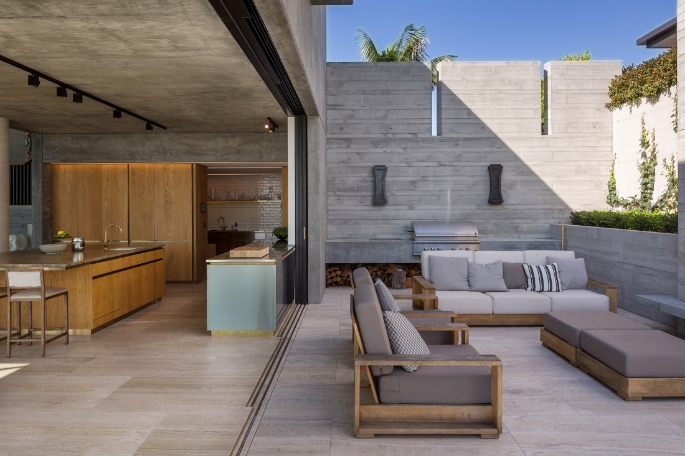
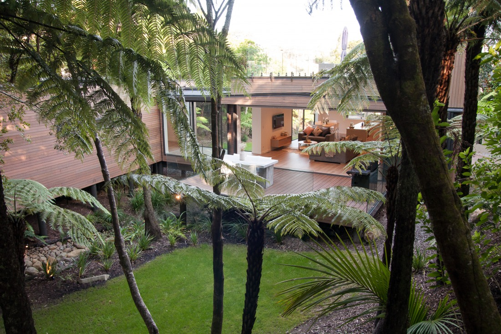

ShadowDeck™ is a "Nail Free Timber Decking System" which gives an unbeatable finish with natural hardwood timber. Simply the best on the marketplace and BRANZ Appraised.

ShadowDeck™ was born from the vision of Darrel, a passionate entrepreneur with a love for outdoor living and a desire to create a decking system that was both beautiful and built to last. Frustrated by the limitations of traditional timber decking — which often showed unsightly nails and screws and was prone to warping and splitting — Darrel set out to find a better solution.
After years of research, development, and collaboration with industry experts, ShadowDeck™ was created. The result is a nail-free timber decking system that provides a sleek, durable, and long-lasting finish, while allowing the timber to naturally expand and contract with the seasons.
Today, Darrel's vision has transformed into a product that's redefining outdoor spaces, offering homeowners and builders alike a smarter, more sophisticated way to enjoy timber decking. Founder Darrel Grace is a veteran of 26 years within the New Zealand building industry, with extensive experience and knowledge of the building trades both here and internationally — having worked as far afield as London, Japan, Australia and the USA.
